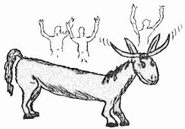

EL BURRO QUE SE HIZO LARGO
Cuentan que una vez había unos muchachos bien traviesos que se juntaban todas las tardes a jugar en un solar con un burro que tenía el papá de uno de ellos. Era un burro bien mansito que se dejaba que lo montaran. Cada vez que esos chamacos lo montaban, el burro brincaba de gusto. Es que era muy juguetón también. (Cuento del blog de Homero Adame)
Pero no siempre las cosas tienen un final feliz. Resulta que el burro como que empezó a cansarse de que esos muchachos se le treparan de a montón. Y es que cada vez eran más los que se le subían al espinazo. Por eso el burro comenzó a dar como relinchidos, pues le dolía el lomo de tantos güercos encima de él. Primero eran como tres, luego venía otro, otro y otros más, hasta que lo montaban como diez o más.
Una tarde, el burro, ya harto de tanto juego brusco de esos Dibujo de Jennifer Mengmalcriados, empezó a crecer y a crecer, y los muy tontos creyeron que eso era más divertido porque así se podían subir más en él. Pero el burro creció tanto que de repente hasta le empezaron a salir cuernos y la cabeza se le puso bien fea. También empezó a apestar bastante, como a azufre. Resulta que el Diablo se había metido en el burro y comenzó a hacer de las suyas. Los muchachos ni cuenta se daban porque traían un merequetengue con el burro en sus juegos. Pero ya cuando el burro era tan largo pero tan largo, incluso comenzó a balbucear cosas horribles, y fue entonces cuando los chamacos se percataron de que era el Diablo. Corrieron despavoridos.
El burro los siguió y los siguió. Ellos se metieron a la casa de uno y cerraron la puerta, pero el burro la rascaba, rebuznando como demonio, hasta que tumbó la puerta y se metió. Era tanto el miedo de esos güercos que no les quedó de otra que hincarse y ponerse a rezar. Pasó mucho rato hasta que, después de tanta oración, el burro se empezó a encoger y volvió a su tamaño normal. Desde entonces, esos muchachos se portaron bien y jamás volvieron a molestar al animal. Texto de Homero Adame tomado de https://adameleyendas.wordpress.com/2010/10/18/el-cuento-del-burro-que-se-hizo-largo/
Muchos de los cuentos y fábulas infantiles, aparte de servir como entretenimiento, suelen llevar implícita una moraleja, cuyo afán es darle una lección a quien se les cuenta. Tal es el caso de esta historia regional de Nuevo León que fue narrada por doña Lupita, una anciana como de 80 años, en la cual los personajes centrales son un burro y un grupo de niños traviesos.
A manera de analogía, durante algunas fiestas tradicionales o patronales de pueblo me ha tocado observar una especie de juego infantil «improvisado», durante el cual los niños corretean detrás de una bicicleta y en cada vuelta el número de participantes en persecución va creciendo, todos con el propósito de treparse en ella. Hago mención de esto porque tal vez ese juego de la bicicleta sea una reminiscencia del cuento del burro que acabamos de leer.
Por último, en lenguaje norestense tenemos una palabra que es sinónimo de bicicleta: “biciburra”. ¿Habrá alguna relación? Creo que eso todos quisiéramos saber…
– – – – – – –
Este cuento fue publicado nuevamente en 2022 en el libro Mitos, cuentos y leyendas de Nuevo León. Regiones Citrícola y Sur, libro de Homero Adame. Esta nueva edición contiene exclusivamente relatos de doce municipios neoleoneses, seis de ellos ubicados en la Región Citrícola y, otros seis, en la Región Sur. Está compuesto por tres capítulos: Mitos, Cuentos y Leyendas; este último subdivido por épocas y temas: Leyendas con contenido prehispánico, Leyendas coloniales de santos y vírgenes, Leyendas de aparecidos y fantasmas, Leyendas de brujas y curanderos, Leyendas de cementerios y Leyendas de tesoros. Más aún: en este tratado el autor presenta cada relato recreando el habla de zonas rurales y serranas de Nuevo León, donde se usa un lenguaje sencillo, pero con vocablos y locuciones poco comunes o desconocidas en otras regiones del país o en las urbes. Cabe destacar que más allá del relato, Homero Adame analiza el contenido de cada leyenda y encuentra simbolismos, hierofanías, elementos teogónicos del pensamiento desde el tiempo mítico y, de tal modo, sitúa a estas regiones neoleonesas en el contexto de la mitología universal. La aclamada obra Mitos, cuentos y leyendas de Nuevo León. Regiones Citrícola y Sur, está disponible en librerías y también en Amazon, tanto en formato digital (Kindle) como en formato impreso o formato papel.
